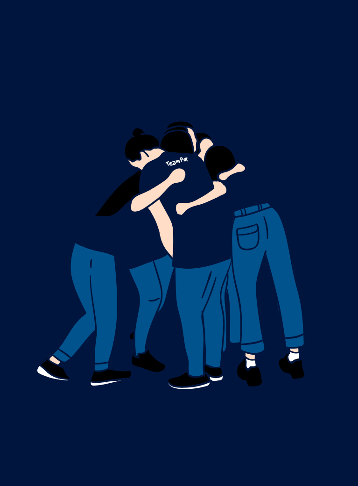
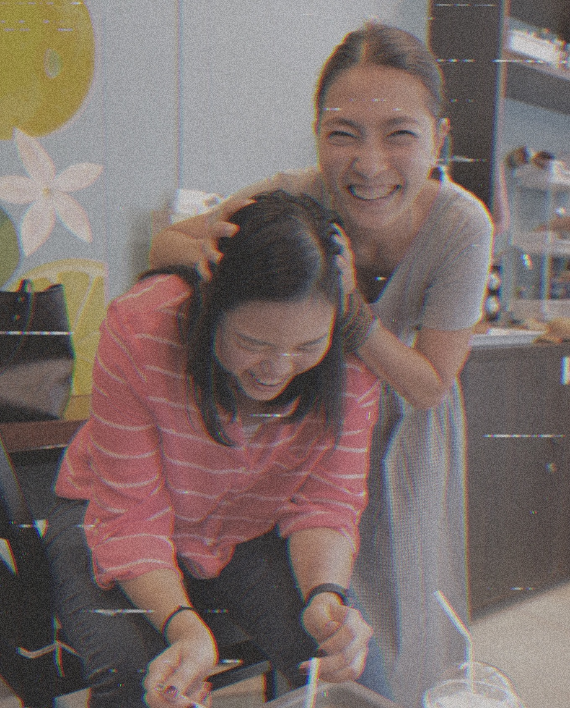
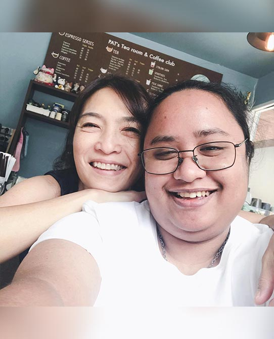
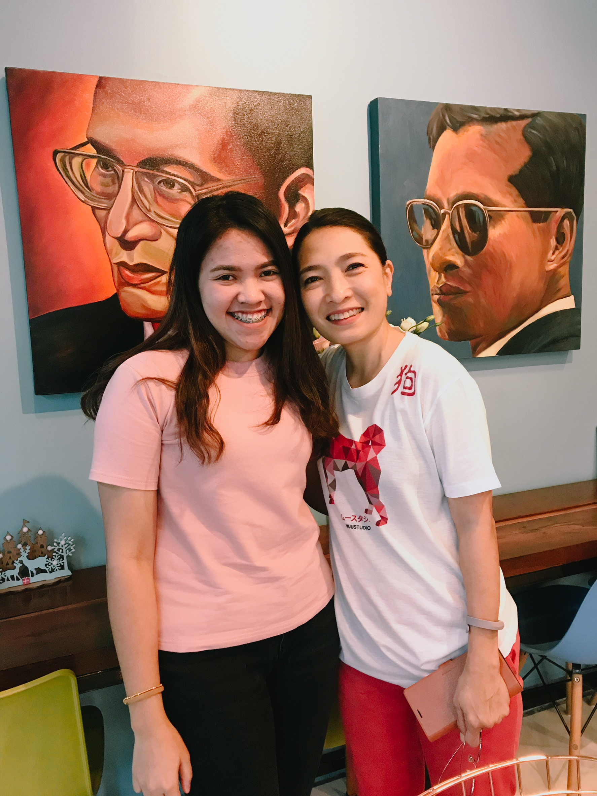
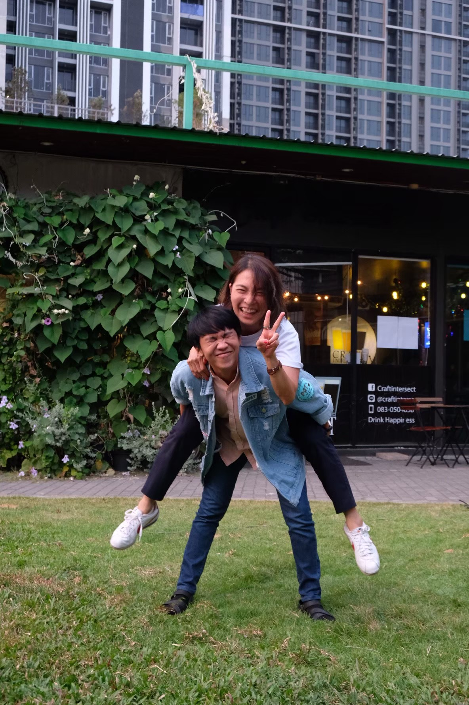
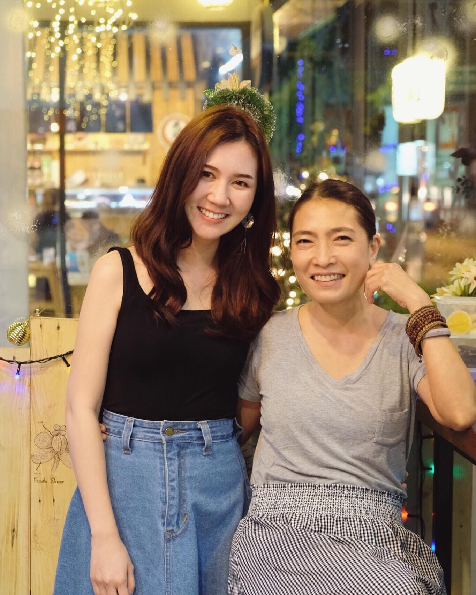
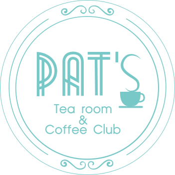

1/7

1/7
TEAM PAT
ไม่มีที่ไหนอุ่นใจเท่าบ้านเรา คำนี้คงใช้ไม่ได้กับร้าน Pat's สำหรับแก้ม นอกจากที่บ้าน ก็มีร้าน Pat's นี่แหละ ที่อุ่นใจทุกครั้งที่อยู่ ขอบคุณอะไรก็ตามที่ทำให้มีร้าน Pat's ในวันนี้... Let's grow together Pat's 🤍 We love you
#แก้มใส
2/7
TEAM PAT
เรามีที่นี่เป็น "บ้าน" เพื่อกลับไปหา
เรามีพี่ไว้เป็น แม่ เพื่อทำขนมอร่อยๆให้กิน รู้สึกโชคดีที่เรามีสิ่งพิเศษนี้ไว้ให้อุ่นใจ อยากจะโอบกอดสิ่งนี้ไว้ไม่ว่านานแค่ไหนก็ตาม.
#ออนฟรายเดย์
3/7
TEAM PAT
ขอบคุณที่แห่งนี้ ที่มอบความรัก มอบความสุข มอบรอยยิ้ม และมอบความอร่อยอิ่มท้องให้มาตลอด เป็นกำลังใจอยู่ตรงนี้เสมอ ข้างๆตรงนี้นะคะ รัก
#โตต้า
4/7
TEAM PAT
สุขสันต์วันครบรอบร้าน Pat’s tea room and coffee club นะคะ ร้านนี้เป็นบ้านอีกหลังเป็นสถานที่พักผ่อน ที่ที่มีแต่เสียงหัวเราะ มีความสุขทุกๆครั้งที่ได้เข้าไป คิดถึงมากๆนะคะ
ช่วงนี้ไม่ได้ไปร้านแต่ยังคิดถึงขนมอร่อยๆของพี่แหม่มนะคะ
#แอม
5/7
TEAM PAT
เย้ !! ครบรอบ 4 ปี ร้านแพทแล้ว ดีใจที่พี่แหม่มทำร้านนี้ที่ทำให้พวกเราได้แบ่งปันเวลาแห่งความสุขและความอร่อยร่วมกัน ส่งใจให้พี่แหม่มแหละพี่ๆร้านแพททุกคนมีความสุขและพลังเยอะๆนะคะ คิดถึงที่สุดเลยค่ะ
#แอร์
6/7
TEAM PAT
สุขสันต์วันครบรอบ 4 ปีของร้านแพทส์นะคะ ขอบคุณที่เป็นแหล่งพักพิงและสร้างความสุขให้กับพวกเราทุกคน รักเสมอค่ะ
#จูน
7/7
TEAM PAT
ที่แห่งนี้มีความรักอยู่ ไม่ว่าก่อนหน้านี้จะเจออะไรมาก็ตาม แต่ทุกครั้งเข้าที่ไปที่ร้าน Pat’s จะทำให้ลืมทุกอย่างที่อยู่ข้างนอก และโฟกัสกับความสุขที่อยู่ตรงหน้า เป็นความรู้สึกที่พิเศษเสมอที่ได้มาที่ Pat’s Tea Room And Coffee Club.
#ฝ้าย กุลพัชร